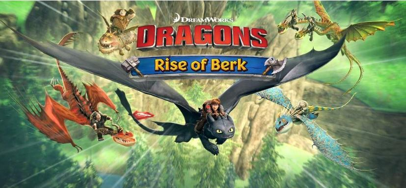
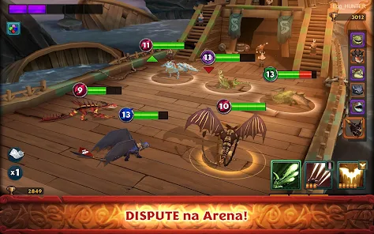
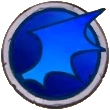

O jogo Dragões: Ascenção de Berk, ou Dragons: Rise of Berk é um jogo casual de gestão no qual os jogadores constroem sua aldeia Viking, cujos cidadãos têm de coexistir com dragões que você cria, treina e, claro, coleciona.

Imagens retirada do jogo

O jogo também conta com um sistema de batalhas PvP online baseado em turnos,no qual existem 4 "tipos" de dragões, sendo esses:
Os defensores/protetores, são os "tanks" do jogo, sendo o tipo de dragão com mais vida e geralmente focado em buffs e cura, alem de possuirem vantagem contra dragões Astutos
Os dragões furiosos,no entanto,são focados em causar um dano massivo a um ou mais oponentes, e possuem vantagem contra dragões defensores

Os dragões velozes,são o tipo de dragão mais rápido com um dano razoavel, porem eles deixam a desejar no quesito de resistência